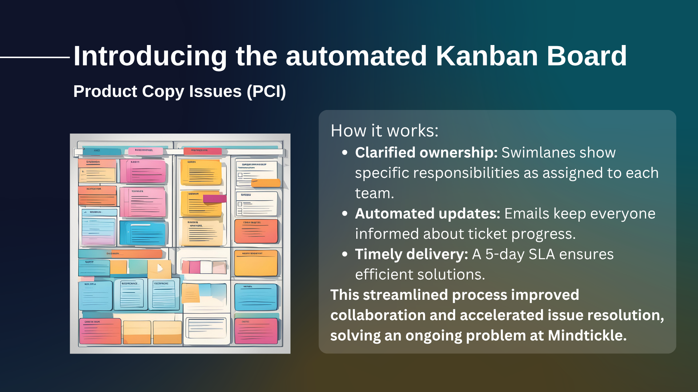
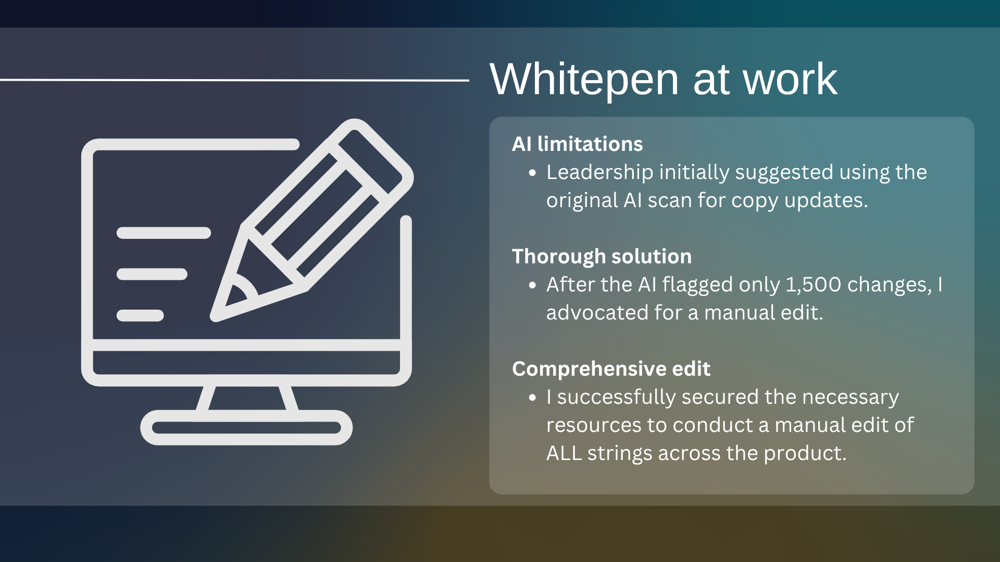
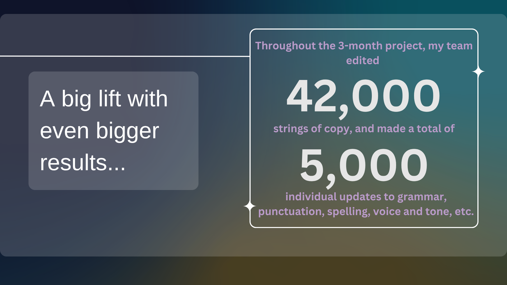

Mindtickle · Content Systems
Years of grammar errors, inconsistent voice and accumulated copy problems had never been systematically addressed. With a team of 3 writers, I designed two systems to fix it — and pushed back on leadership to make sure we fixed it right.
Copy debt isn't dramatic. It accumulates quietly — a misplaced comma here, an inconsistent capitalization there, a button label that says "Create" on one page and "New" on another. At Mindtickle, years of rapid product development had left this kind of debt throughout the platform: grammar errors, spelling mistakes, punctuation inconsistencies, voice and tone drift.
The bigger problem wasn't the debt itself. It was that there was no process for raising issues, no clear ownership for fixing them and no way to track resolution. Issues would surface, get flagged and disappear into the void.
"The problem wasn't finding the errors. It was building a system that made fixing them sustainable."
I designed a two-pronged approach: one system for ongoing issue management, one for clearing the accumulated backlog entirely.

Swimlane ownership, automated progress emails and a 5-day SLA made the PCI board the first system at Mindtickle that guaranteed copy issues would actually get resolved.

When leadership proposed relying on an AI scan that flagged only 1,500 changes, I pushed back and secured the resources for a full manual edit of all strings across the product.
When the Whitepen project was scoped, leadership's initial proposal was to rely on an AI scan to identify and fix copy issues. The AI flagged approximately 1,500 changes — a number that seemed manageable and efficient.
1,500 flagged changes. Fast, low-resource, incomplete. Would miss anything the model didn't recognize as an error.
Every string, reviewed by a writer. Comprehensive, resource-intensive and the only way to actually fix the product.
I pushed back. An AI scan can catch obvious errors — spelling, punctuation — but it can't evaluate voice, catch contextual awkwardness or notice when technically correct copy is still wrong for the brand. A product with 1,500 AI-fixed errors and 20,000 unreviewed strings isn't a fixed product.
I made the case to leadership, secured the resources for a full manual review and led the team through all 42,000 strings. The result was a product that had been genuinely edited — not just patched.

Three months. Three writers. 42,000 strings reviewed, 5,000 individual updates shipped. The first time Mindtickle's product copy had been comprehensively edited at scale.